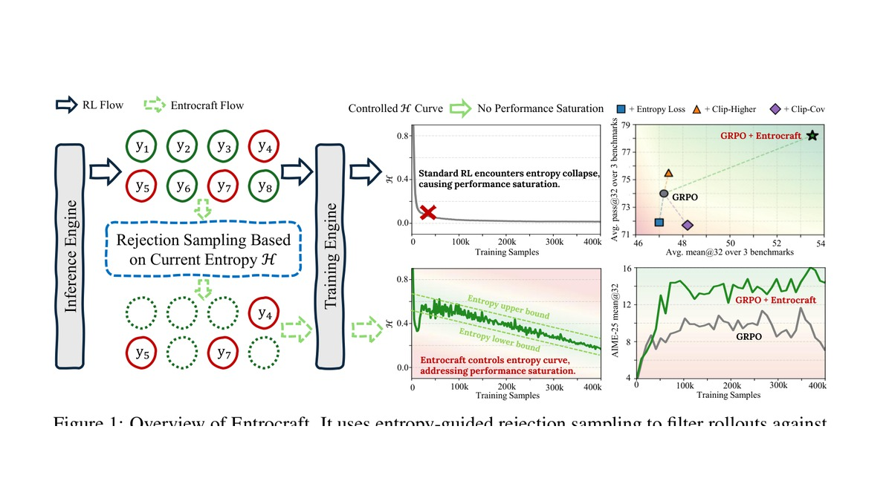
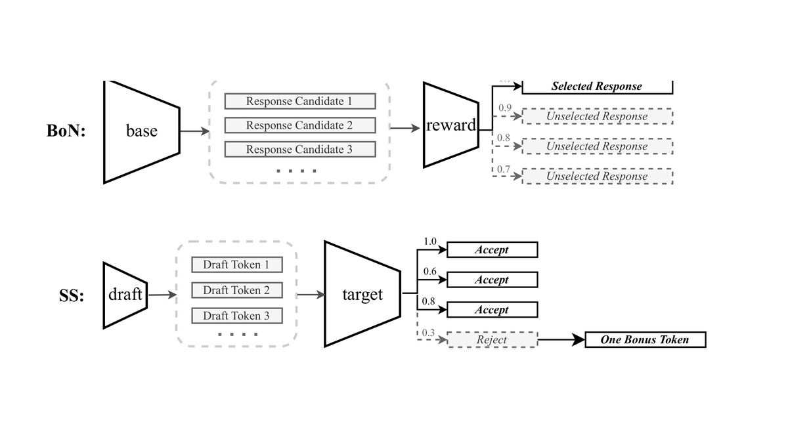
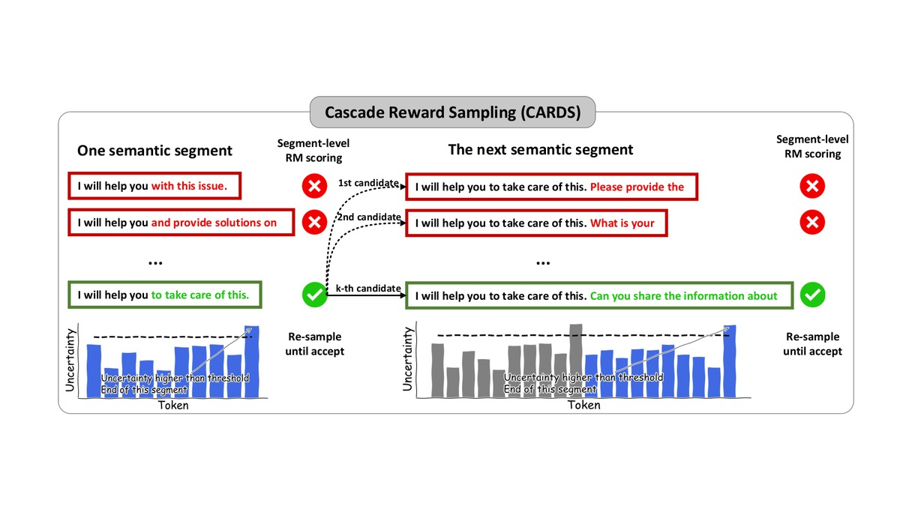
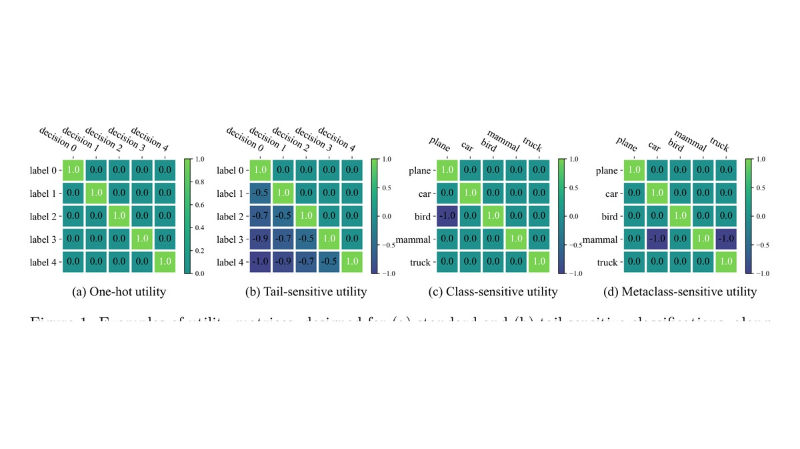
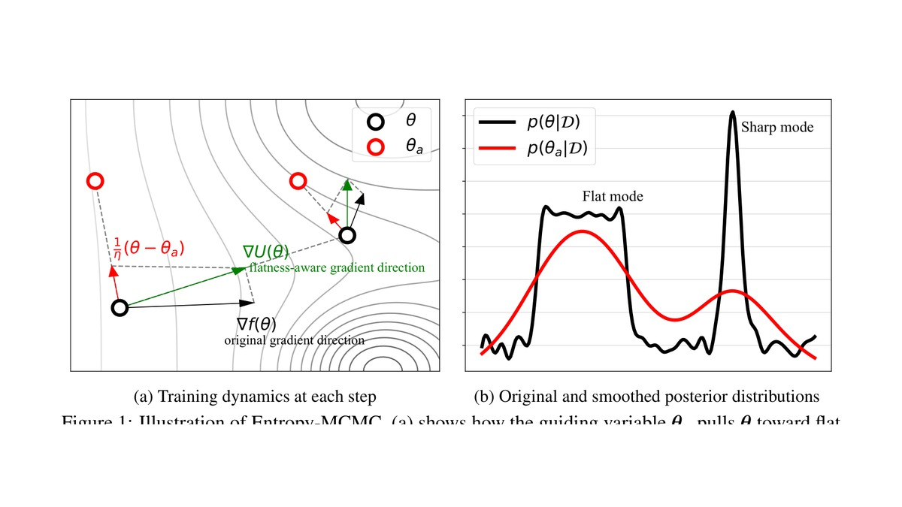
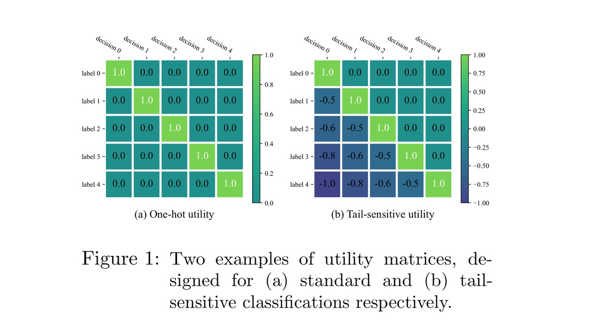
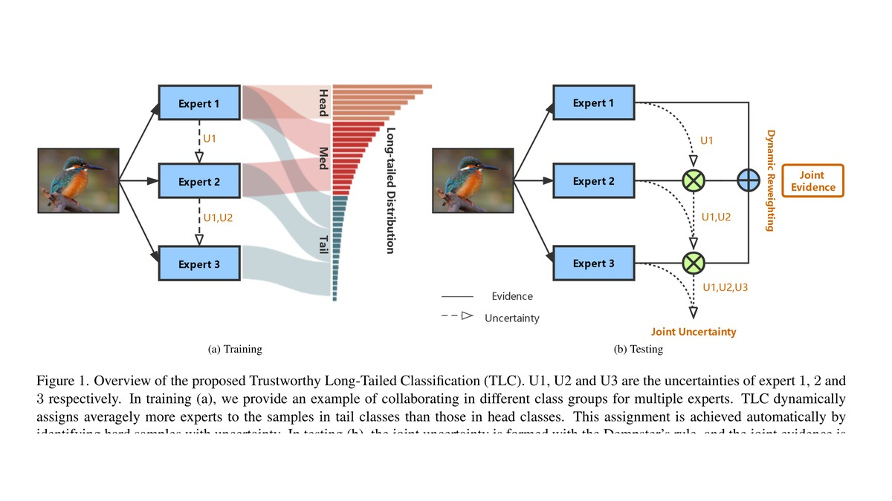
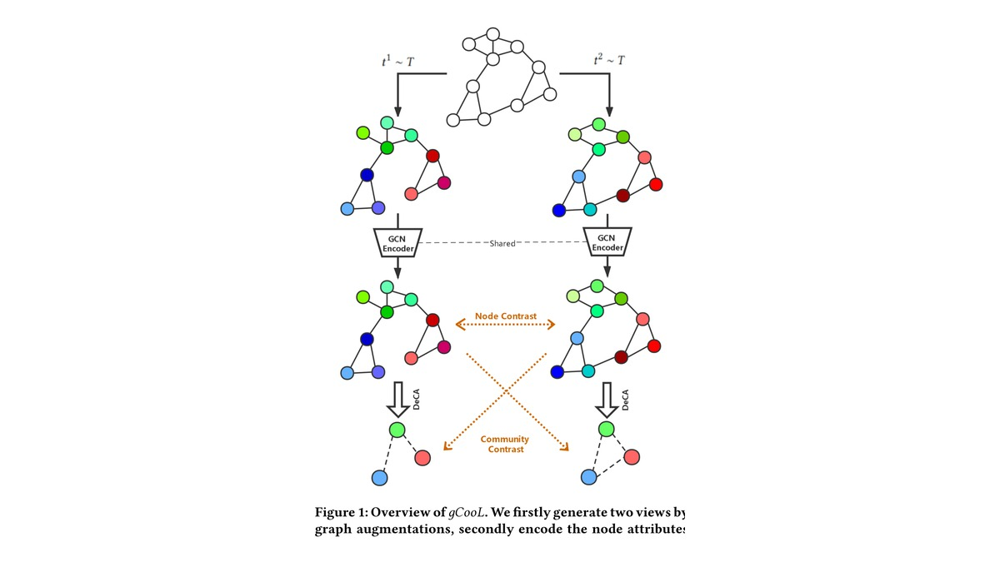

Preprint, 2026
Addressing Performance Saturation for LLM RL via Precise Entropy Curve Control
Entropy-curve control for stable long-horizon RLVR training.
I am a PhD candidate in the Department of Computer Science at Purdue University, advised by Ruqi Zhang. I completed my BE in computer science and technology at Tianjin University, advised by Changqing Zhang.
I am interested in the statistical frameworks for stable and efficient ML algorithms. Recently, I focus on the reinforcement learning in LLM post-training, especially the exploration boundary of complex reasoning tasks. I am also broadly interested in preference alignment, (multimodal) LLM safety, and Bayesian deep learning.

Entropy-curve control for stable long-horizon RLVR training.

Speculative decoding reframed as efficient reward-guided alignment.

Segment-level rejection sampling for faster aligned generation.

Decision-theoretic utilities for reliable long-tailed predictions.

A flatness-aware sampling method for Bayesian deep learning.

A Bayesian decision framework for class-imbalanced data.

Uncertainty-aware expert engagement for long-tailed recognition.

Community-aware contrastive learning for graph representation.
[04/30/2026] 1 paper accepted by ICML 2026
[04/06/2026] 1 paper accepted by ACL 2026
[03/23/2026] Start an internship at Apple MLR
[01/26/2026] 1 paper accepted by ICLR 2026
[08/20/2025] 1 short paper accepted by EMNLP 2025
[07/08/2025] 2 papers accepted by COLM 2025